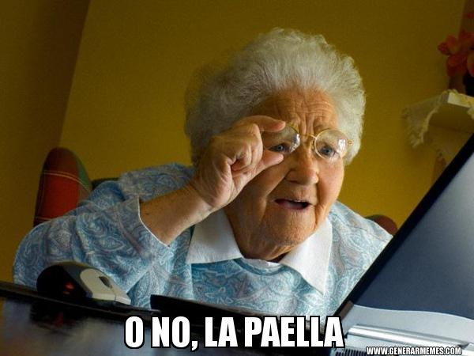
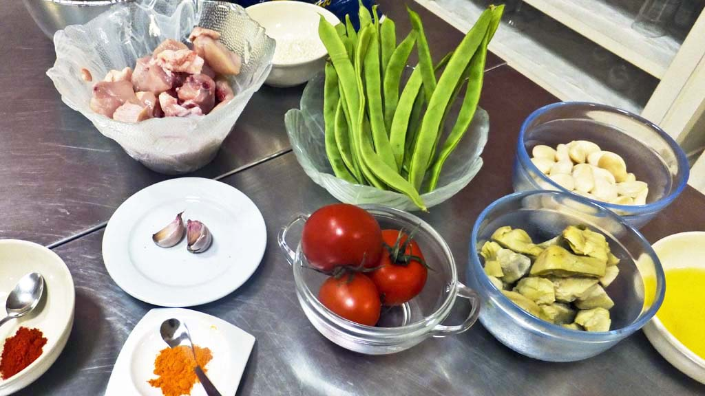
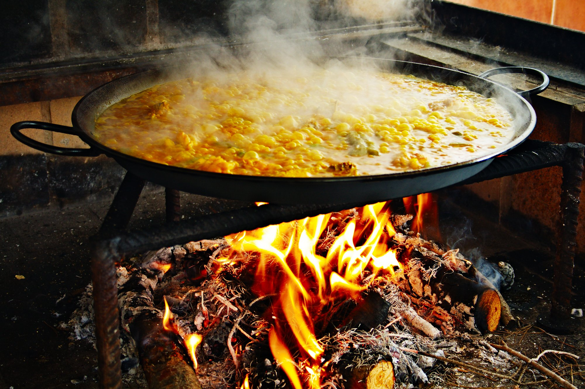
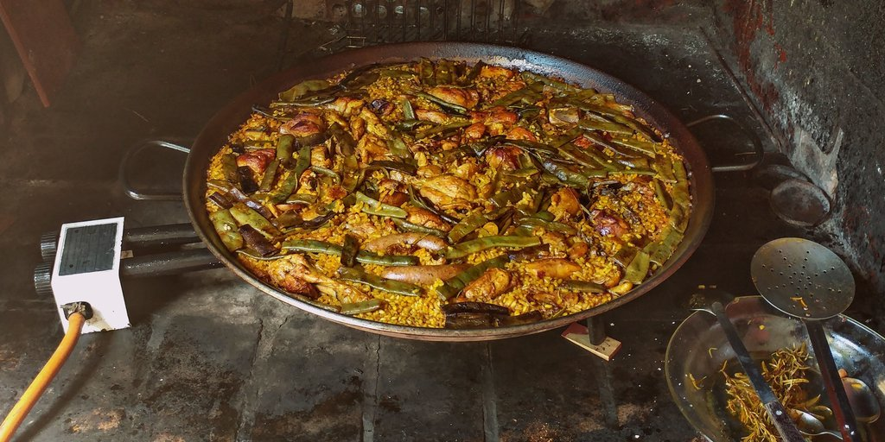
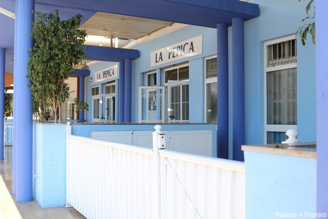
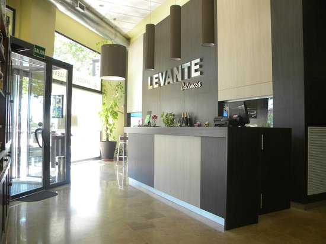

Vous souvenez-vous des paellas de la cantine de votre école, avec ses
crevettes, ses moules et son chorizo? C’est ce que les valenciens
appellent « arroz con cosas » (riz avec des choses) et ceci n’est donc
pas une paella. Alors effacez toute de suite cette paella de votre
mémoire, pour la remplacer par ce qui va suivre. Je vous dévoile la
véritable recette de la paella valenciana mais avant ça un peu
d’histoire !
Histoire

Avant toute chose, d’où vient le nom « paella »? Il existe différentes
théories sur la provenance du mot. Il viendrait du latin ou peut-être
de l’arable. Mais il y a une bien plus belle théorie. Pour conquérir
une femme, un homme aurait préparé ce plat pour elle. « Pour elle »
traduit en espagnol « para ella »… »PA-ELLA ». Cette histoire pourrait
se confirmer par le fait que la paella est par tradition un plat
cuisiné par les hommes.
La paella n’est pas juste le nom du plat, c’est aussi le nom de la
poêle à deux poignées dans laquelle elle se cuisine. Selon l’histoire,
c’est d’ailleurs la poêle qui aurait donné le nom au plat. Il en
existe des tailles différentes en fonction de la quantité préparée. De
part la tradition, pour gagner du temps, certains mangent directement
dans le plat tout en raclant le fond avec une cuillère en bois.
Les premières paellas remontent aux XVème et XVIème siècles. Dans les
zones rurales de Valencia, les paysans et bergers cherchaient un plat
facile à préparer avec les ingrédients qu’ils avaient sous la main.
Ils cuisinaient donc avec de la volaille, du lapin, des légumes frais,
du riz, du safran et de l’huile d’olive. L’ensemble était cuit
lentement au feu créé en brûlant des branches d’orangers.
Il existe deux grands types de paellas: la paella valenciana avec les
ingrédients présentés ci-dessus et la « paella de mariscos ». Dans
cette dernière, le riz est accompagné de poissons et/ou fruits de mer
comme de la lotte, des crevettes ou des moules. Pour la même raison
que la paella valenciana, les ingrédients étaient ceux trouvés à
proximité de l’Albufera, rizières de Valencia situées en bord de mer .
Recette
Il n’y a pas de recette unique. Chaque valencien a ses propres
manières de préparer sa paella avec les ingrédients qu’il souhaite. La
recette que je vous propose est celle réalisée tous les dimanches par
la famille valencienne de mon copain. En suivant cette recette, vous
devriez donc vous régaler !
Ingrédients

La quantité des ingrédients correspond à une paella pour 10 personnes.
1 kg de riz
2 kg de poulet
1 kg de lapin
2 grosses tomates mûres
500 g de haricots verts et plats
250 g de garrofón (gros haricots blancs plats cultivés à Valencia)
3 dL d’huile d’olive
Brins de safran (ou une cuillère à café de colorant)
6 g de piment doux
Sel
Eau
Préparatifs

Histoire de respecter la tradition et pour une meilleure et plus
rapide cuisson, il est recommandé de cuire votre paella sur le feu.
Alors bien sûr tout le monde n’a pas la chance d’avoir un paellero.
Dans ce cas, des plaques de cuisson au gaz font très bien l’affaire.
En fonction de la taille de votre paella, il est recommandé d’acheter
un réchaud à gaz pour paella à connecter à votre plaque de gaz
directement ou à une bouteille de gaz. Si vous avez des plaques
électriques ou à induction, il existe des paellas spéciales. Il vous
suffira de suivre la recette, mais au moment de la cuisson du riz,
remuez-le pour qu’il cuisse uniformément.
Une fois tous les ingrédients rassemblés, et votre installation prête,
vous pouvez commencer ! Il faudra tout d’abord, coupez le poulet et le
lapin en morceaux. Ensuite nettoyez les haricots verts et
découpez-les. Puis pelez, épépinez et broyez les tomates pour obtenir
une sauce tomate à laquelle vous pourrez ajouter l’ail coupée pour
plus de saveur.
Préparation
Mettez la paella sur le feu avec l’huile d’olive au centre et un peu
de sel réparti autour. Quand l’huile est bouillante, ajoutez le poulet
et le lapin et faites-les revenir à feu doux. Quand ils commencent à
dorer, ajoutez les haricots verts et les blancs et les cuire jusqu’à
qu’ils commencent à se friper.

Ajoutez ensuite la sauce tomate préalablement préparée. Si vous avez
décidé de mettre des escargots, c’est le moment. Après avoir mélangé,
ajoutez le piment doux. Faites revenir le tout à feux doux durant
quelques minutes.
Puis ajoutez l’eau que vous laisserez bouillir durant 20 minutes.
Mettez le safran et rajoutez du sel si besoin. Le bouillon (caldo en
espagnol) doit être « un peu » trop salé. Laissez bouillir encore 10
minutes.
Enfin lorsque l’eau est à ébullition à gros bouillon, repartissez de
manière égale le riz dans la paella. Ajoutez également le romarin si
vous le souhaitez. Au total il faut le cuire entre 25 et 30 minutes.
D’abord à feu vif durant 8 à 10 minutes puis baissez à feu moyen la
même durée et enfin 4 ou 5 minutes à feux doux. Si vous voulez réussir
le soccarrat (riz croustillant légèrement grillé au fond de la
paella), il vous faudra mettre à feu vif à la fin durant 1 ou 2
minutes. Une fois que le riz a absorbé tout le bouillon et qu’il est
cuit, laissez-le reposer 5 minutes avant de le servir.
Bonnes adresses

Restaurant La Pepica
Passeig de Neptú, nº 6, 46011 València, Espagne

Restaurant Levante
Carrer de Góngora, 1, 46015 València, Espagne